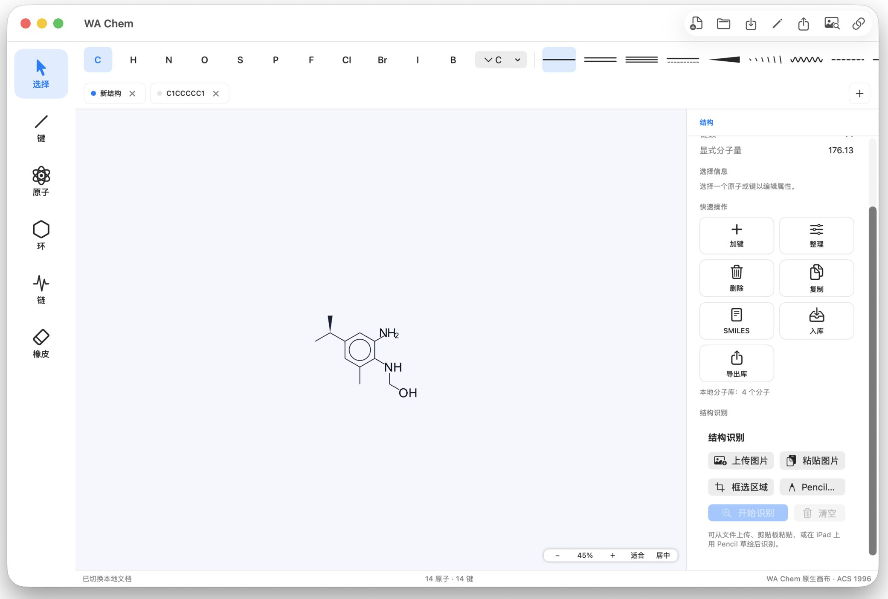

01
自然绘制
围绕原子、键、环和选择建立低摩擦的编辑体验。
02
识别与校正
让截图、论文图片和手绘结构重新成为可编辑内容。
03
保存与交换
在同一工作区完成保存、格式导入导出与后续计算。
专注真实的绘制体验
熟悉的元素、键型和结构属性集中在同一工作区。Mac 原生界面已支持 ACS 1996 文档样式。

当前状态
首个公开版本准备中
Latest Release
查看版本说明
选择下载包
01
独立 Web 部署包
服务器部署 · tar.gz
02
VOS App 包
VOS 应用安装 · pull.tar
03
Mac App
Apple Silicon · dmg
SHA256 校验文件将在版本发布后提供
04
应用商店
macOS 与 iPadOS · 即将上架
Mac
iPad
即将上架
- 1 下载
- 2 安装
- 3 开始绘制